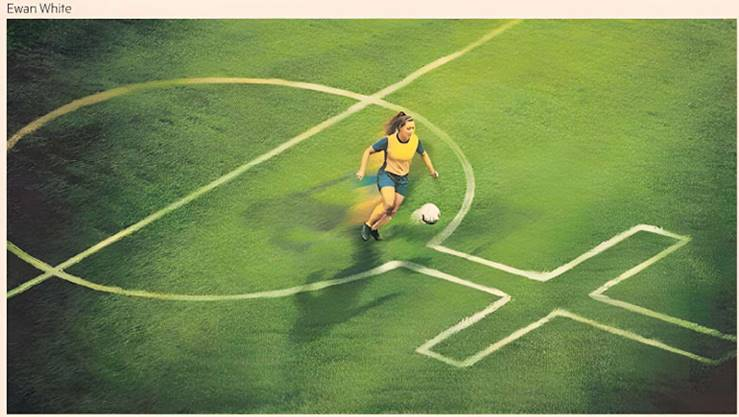

Stephen Bush

England’s second successive victory at the women’s European football championship is the result of many things: elite coaching, team spirit and a little bit of luck. But it is also a triumph of money.
Since the first women’s Euros I watched — in which England were eliminated 6-2 by Germany — the amount spent by both the Football Association and England's elite clubs has skyrocketed. In 2009, Rachel Williams had been working full-time as a plasterer just months before the start of the tournament. Eni Aluko worked part-time as a lawyer. In contrast, in 2025, the starting XI are full-time footballers, many of them with a host of endorsements and sponsorship deals.
England is not alone in spending more money on women’s football — it’s not a coincidence that the final was between England and Spain, who also contributed the clubs (Arsenal and Barcelona) for the Champions League final a few weeks ago, which was also won by the English side. But some of the biggest clubs in world football aren’t spending more on women’s football out of a philanthropic desire to band together to beat diabetes or other ailments caused by sedentary lifestyles. It’s because they believe there is money to be made.
Previous successes have provided a downpayment on that belief. The surge in attendances after England’s victory at the Euros in 2022 now means that Arsenal’s home games in the league take place at the 60,000-seater Emirates Stadium, where the men’s team play, not the 4,500-capacity Meadow Park in London’s exurbs.
The dream of football’s moneymakers — that the phrase “women’s football” might one day be as redundant as referring to “women’s tennis” when you talk about the stars of that game — looks, if not in immediate reach, to be a plausible target to aim for.
The question is whether that success will mean changing the game in ways that long-standing supporters find alienating. Football administrators have seen expanding the audience for women’s football as about targeting two groups: persuading people, largely men, with a pre-existing attachment to a football club, to attend both men’s and women’s games, and attracting people without an interest in men’s football, largely women, to games for the first time.
Significantly cheaper tickets — my season ticket is £110, behind the goal, while the same seat for the men’s game costs £1,127 — mean there are many more families with children, and often people will bring guests who support other teams. From this season, fans in certain parts of the stadium will be able to drink alcohol at their seats, which they can’t do at men’s matches. The dreaded video assistant referee (VAR), which drains some of the fun and energy out of the stadium experience, has not yet come to the women’s game.
The league’s major players and struggling teams are not a carbon copy of the men’s top flight: Arsenal’s opening game this year is against the London City Lionesses, a women’s club without a male affiliate. Although England's Premier League markets itself “LGBT-friendly” in all circumstances, it is at women's matches you will see same-sex couples arm in arm, in a way that is rare in the men’s game.
That’s not to say, as some condescending coverage does, that we are all sweetness and light. One reason I like to sit, or rather stand, behind the goal is to barrack the opposition goalkeeper, and during last season, the march to the stadium was often accompanied by graffiti calling for the struggling head coach, Jonas Eidevall, to leave or be sacked. Although you can no longer make out the solitary voice of the particularly angry man who used to vent his displeasure at poor performances at Meadow Park, now when performances drop the mood in the stands can be mutinous.
But the question for long-term fans is whether the distinctive delights of the women’s game can thrive and survive alongside the game’s growth. Will my £110 ticket soon be a thing of the past? Can the game attract large crowds on a par with the men while maintaining its relaxed relationship to booze and equal love? Can it command big television audiences while the match day experience remains unblighted by VAR? Or will all these joys disappear, as have the days when you could enjoy a cup of tea, a hot dog, a chat with the catering staff and be back in the stands before the end of halftime in Meadow Park?
These questions all suggest a broader uncertainty around the women's game: we know the reason why we are able to watch the finest generation of women’s footballers yet seen is because of more money and more interest in the game. But it remains to be seen if there is a route to the rewards and prestige enjoyed by the men’s game that doesn’t involve taking on its more dispiriting aspects.